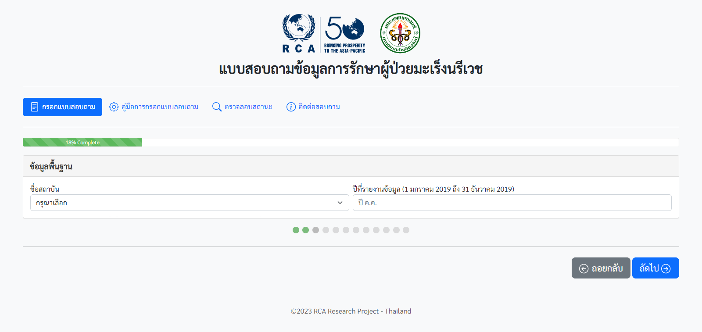
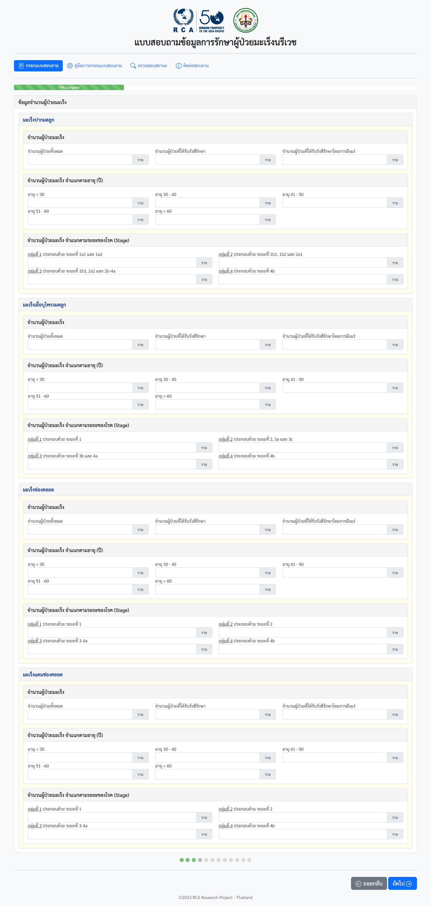
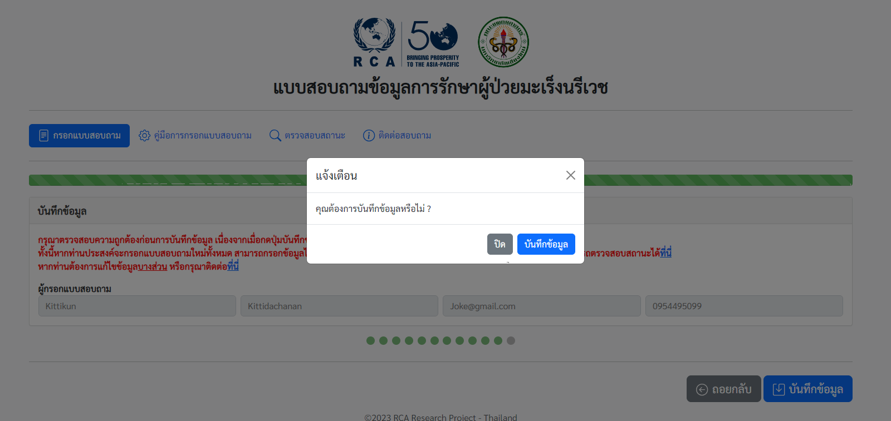

คู่มือการกรอกแบบสอบถาม
คำสำคัญ (Keyword) :
- มะเร็งปากมดลูก (Cervical cancer)
- มะเร็งเยื่อบุโพรงมดลูก (Endometrial cancer)
- มะเร็งช่องคลอด (Vaginal cancer)
- มะเร็งแคมช่องคลอด หรือมะเร็งปากช่องคลอด (Vulvar cancer)
ขั้นตอนการกรอกแบบสอบถาม มีดังนี้
หน้าที่ 1 กดปุ่ม เริ่มกรอกแบบสอบถาม
หน้าที่ 2 ข้อมูลผู้กรอกแบบสอบถาม ประกอบด้วย
1. ชื่อ
2. นามสกุล
3. อีเมล
4. เบอร์โทรติดต่อ
หน้าที่ 3 ข้อมูลพื้นฐาน ประกอบด้วย
1. ชื่อสถาบัน
2. ปีที่รายงานข้อมูล (กรุณากรอกปี ค.ศ. 2019)
หน้าที่ 4 ข้อมูลจำนวนผู้ป่วยมะเร็ง แบ่งเป็น มะเร็งปากมดลูก มะเร็งเยื่อบุโพรงมดลูก มะเร็งช่องคลอด และมะเร็งแคมช่องคลอด ประกอบด้วย
1. จำนวนผู้ป่วยมะเร็ง ดังนี้
1.1 จำนวนผู้ป่วยมะเร็งทั้งหมดต่อปี (ระบุเป็นจำนวนรายต่อปี)
1.2 จำนวนผู้ป่วยมะเร็งทั้งหมดต่อปีที่ได้รับการรังสีรักษา (ระบุเป็นจำนวนรายต่อปี)
1.3 จำนวนผู้ป่วยมะเร็งทั้งหมดต่อปีที่ได้รับการรังสีรักษาโดยการฝังแร่ (ระบุเป็นจำนวนรายต่อปี)
2. จำนวนผู้ป่วยมะเร็ง จำแนกตามอายุ (ปี) ดังนี้
2.1 อายุ < 30 ปี
2.2 อายุ 30 - 40 ปี
2.3 อายุ 41 - 50 ปี
2.4 อายุ 51 - 60 ปี
2.5 อายุ > 60 ปี
3. จำนวนผู้ป่วยมะเร็ง จำแนกตามระยะของโรค (Stage) ดังนี้
3.1 มะเร็งปากมดลูก
- กลุ่ม 1 ประกอบด้วย ระยะที่ 1a1 และ 1a2
- กลุ่ม 2 ประกอบด้วย ระยะที่ 1b1, 1b2 และ 2a1
- กลุ่ม 3 ประกอบด้วย ระยะที่ 1b3, 2a2 และ 2b-4a
- กลุ่ม 4 ประกอบด้วย ระยะที่ 4b
3.2 มะเร็งเยื่อบุโพรงมดลูก
- กลุ่ม 1 ประกอบด้วย ระยะที่ 1
- กลุ่ม 2 ประกอบด้วย ระยะที่ 2, 3a และ 3c
- กลุ่ม 3 ประกอบด้วย ระยะที่ 3b และ 4a
- กลุ่ม 4 ประกอบด้วย ระยะที่ 4b
3.3 มะเร็งช่องคลอด
- กลุ่ม 1 ประกอบด้วย ระยะที่ 1
- กลุ่ม 2 ประกอบด้วย ระยะที่ 2
- กลุ่ม 3 ประกอบด้วย ระยะที่ 3-4a
- กลุ่ม 4 ประกอบด้วย ระยะที่ 4b
3.4 มะเร็งแคมช่องคลอด
- กลุ่ม 1 ประกอบด้วย ระยะที่ 1
- กลุ่ม 2 ประกอบด้วย ระยะที่ 2
- กลุ่ม 3 ประกอบด้วย ระยะที่ 3-4a
- กลุ่ม 4 ประกอบด้วย ระยะที่ 4b
หน้าที่ 5 การฉายรังสี External beam radiotherapy ในผู้ป่วยมะเร็ง แบ่งเป็น มะเร็งปากมดลูก มะเร็งเยื่อบุโพรงมดลูก มะเร็งช่องคลอด และมะเร็งแคมช่องคลอด ประกอบด้วย
1. โดยใช้ Single-photon LINAC (SP-LINAC) คิดเป็นร้อยละ (ระบุตัวเลขระหว่าง 0 – 100)
2. โดยใช้ Multi-photon LINAC (MP-LINAC) คิดเป็นร้อยละ (ระบุตัวเลขระหว่าง 0 – 100)
หน้าที่ 6 การยึดตรึงผู้ป่วย (Immobilization) แบ่งเป็น มะเร็งปากมดลูก มะเร็งเยื่อบุโพรงมดลูก มะเร็งช่องคลอด และมะเร็งแคมช่องคลอด ประกอบด้วย
1. Simple (ไม่มีอุปกรณ์ยึดตรึง) (ระบุเป็นจำนวนราย)
2. Custom (Ankle lock, Knee support) (ระบุเป็นจำนวนราย)
3. Complex (SBRT set) (ระบุเป็นจำนวนราย)
4. Block/Customized (Vacloc, Pelvic mask, Belly board) (ระบุเป็นจำนวนราย)
หน้าที่ 7 จำนวนผู้ป่วยที่ฉายรังสี แบ่งเป็น มะเร็งปากมดลูก มะเร็งเยื่อบุโพรงมดลูก มะเร็งช่องคลอด และมะเร็งแคมช่องคลอด ประกอบด้วย
1. 2D technique (Cobalt / SP-LINAC / MP-LINAC) (ระบุเป็นจำนวนราย)
2. 3D technique (Cobalt / SP-LINAC / MP-LINAC) (ระบุเป็นจำนวนราย)
3. IMRT/IGRT technique (SP-LINAC / MP-LINAC) (ระบุเป็นจำนวนราย)
หน้าที่ 8 ค่าเฉลี่ยของจำนวนครั้งของการฉายรังสี (ระบุจำนวนครั้งต่อคอร์ส) แบ่งเป็น มะเร็งปากมดลูก มะเร็งเยื่อบุโพรงมดลูก มะเร็งช่องคลอด และมะเร็งแคมช่องคลอด
หน้าที่ 9 จำนวนครั้งของการให้รังสีรักษาระยะใกล้ต่อปี แบ่งเป็น มะเร็งปากมดลูก มะเร็งเยื่อบุโพรงมดลูก มะเร็งช่องคลอด และมะเร็งแคมช่องคลอด จำแนกตามระยะของโรค (Stage) มีรายละเอียดดังนี้
1. รังสีรักษาหลังการผ่าตัด จำแนกเป็น ใส่แร่หลังจากการฉายรังสี และ ใส่แร่อย่างเดียว ประกอบด้วย
1.1 จำนวนผู้ป่วย (ระบุเป็นราย)
1.2 Simple 2D (ระบุเป็นจำนวนครั้งต่อปี)
1.3 Simple 3D CT (ระบุเป็นจำนวนครั้งต่อปี)
1.4 Simple 3D MRI (ระบุเป็นจำนวนครั้งต่อปี)
1.5 Complex 3D CT (ระบุเป็นจำนวนครั้งต่อปี)
1.6 Complex 3D MRI (ระบุเป็นจำนวนครั้งต่อปี)
2. รังสีรักษาเป็นการรักษาหลัก จำแนกเป็น ใส่แร่หลังจากการฉายรังสี และ ใส่แร่อย่างเดียว ประกอบด้วย
2.1 จำนวนผู้ป่วย (ระบุเป็นราย)
2.2 Simple 2D (ระบุเป็นจำนวนครั้งต่อปี)
2.3 Simple 3D CT (ระบุเป็นจำนวนครั้งต่อปี)
2.4 Simple 3D MRI (ระบุเป็นจำนวนครั้งต่อปี)
2.5 Complex 3D CT (ระบุเป็นจำนวนครั้งต่อปี)
2.6 Complex 3D MRI (ระบุเป็นจำนวนครั้งต่อปี)
หน้าที่ 10 บุคลากรของรังสีรักษา แบ่งเป็น จำนวนบุคลากร และ เงินเดือนเฉลี่ย (บาท)
หน้าที่ 11 รายการอุปกรณ์ ประกอบด้วย X-sim, CT sim, 4D CT, MRI, MRI sim, PET CT, SP-LINAC, MP-LINAC, R&V-OMS, 3D-TPS, 4D-TPS, HDR afterloader และ C-arm
หน้าที่ 12 เมื่อกรอกข้อมูลเรียบร้อยแล้ว กรุณากดปุ่มบันทึกข้อมูล
จากนั้นจะปรากฎข้อความแจ้งเตือนการยืนยันการบันทึกข้อมูล
เมื่อยืนยันบันทึกข้อมูลเรียบร้อย ระบบจะแจ้งว่า "บันทึกข้อมูลสำเร็จ" เป็นอันเสร็จสิ้นการกรอกแบบสอบถาม